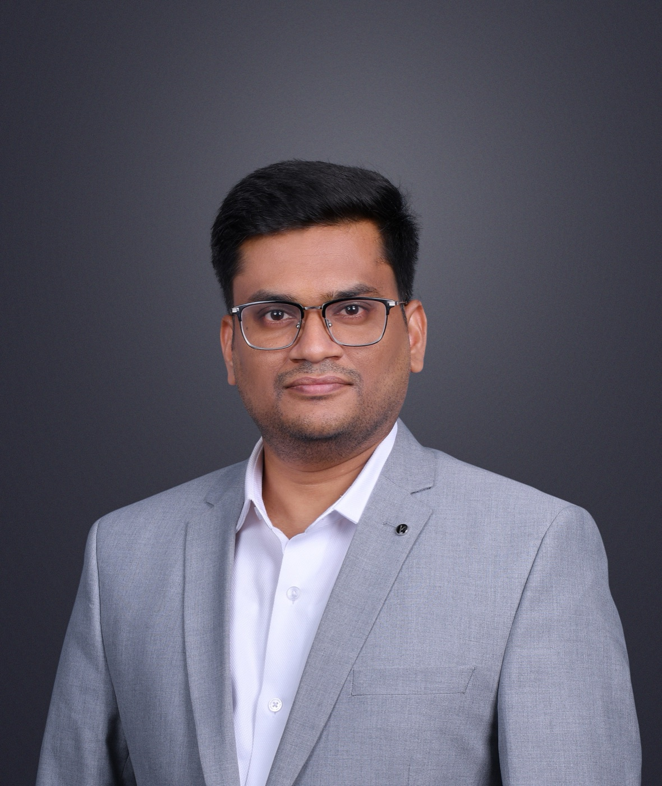

Blood sugar & HbA1c
New diagnosis, glucose above target or repeated low-glucose episodes.

Endocrinologist in Coimbatore
MBBS MD Internal Medicine (PGIMER, Chandigarh) DM Endocrinology (PGIMER, Chandigarh)
Consultant endocrinologist at KMCH, Coimbatore, providing specialist care for diabetes, obesity and metabolic syndrome, thyroid, adrenal, parathyroid, gonadal, and metabolic bone disorders.
Explore diabetes specialist and blood sugar care at KMCHFeatured Care Area
Specialist evaluation and ongoing care for type 1, type 2, gestational, young-onset and complex diabetes—including review of blood sugar, HbA1c, medicines, insulin and glucose-monitoring data.
New diagnosis, glucose above target or repeated low-glucose episodes.
Review of medicines, insulin and glucometer or continuous glucose-monitoring patterns.
Pregnancy, young-onset diabetes, uncertain diabetes type or possible complications.
Clinical AI
Dr. Durairaj Arjunan is interested in responsible, clinician-led uses of artificial intelligence in endocrine care. Explore the dedicated page for the Neurabrix Bone Age Calculator and its guided clinical workflow.
About
Dr. Durairaj Arjunan is a consultant endocrinologist at KMCH, Coimbatore, with a broad practice spanning diabetes, obesity and metabolic syndrome, thyroid disorders, adrenal and parathyroid disorders, testicular and ovarian endocrine disorders including polycystic ovarian syndrome (PCOS/PCOD/PMOS), and metabolic bone disease.
His training spans MBBS at Madurai Medical College, MD in Internal Medicine (PGIMER, Chandigarh), DM in Endocrinology (PGIMER, Chandigarh). At PGIMER, his DM training included focused exposure to pituitary disease, metabolic bone disease, Cushing's syndrome, diabetic foot and peripheral neuropathy, young-onset diabetes, hypoparathyroidism, and biochemical endocrinology.
His academic profile includes All India Rank 1 in AIIMS/PGIMER (INI-SS), the ECTS New Investigator Award, EuroPit Fellowship in Pituitary Disorders, ESICON Best Oral Presentation, ESMO merit recognition, and more than 30 original studies, including a first-author publication in The New England Journal of Medicine.
He welcomes research collaboration focused on obesity and diabetes in children and young adults, including work spanning clinical studies, prevention, and early intervention.
Plan Your Visit
Bringing a concise medical record can make the consultation more useful. Do not stop medicines or fast for tests unless the clinic has specifically instructed you to do so.
KMCH Main Center
99, Avanashi Road, Coimbatore-641014.
Tamil, English, Hindi, Punjabi and Bengali consultations are listed on the profile. Call or WhatsApp to confirm current availability.
Care Areas
Explore patient-focused information for common local searches, including diabetes or “sugar” specialist, thyroid doctor, obesity and medical weight management, and hormone specialist care in Coimbatore.
Credentials
Research
Research spans diabetes, metabolic bone disease, thyroid and adrenal disease, endocrine oncology, and rare endocrine presentations.
Google Scholar Profile| Date | Topic |
|---|---|
| July 2022 | Recent Advances in Diabetes Management |
| October 2022 | Type 1 Diabetes Mellitus Prevention: Present and Future |
| November 2022 | Automated Insulin Delivery Systems: From Basics to Modern Advances |
| November 2022 | Pathogenesis and Treatment of Skeletal Fragility in Type 2 Diabetes Mellitus |
| December 2022 | Polygenic Risk Scores in Diabetes: Heterogeneity and Clinical Translation |
| February 2023 | Diabetes Mellitus and ER Stress in Pancreatic Beta Cells |
| March 2023 | Biomarkers and Function of Beta Cells in Diabetes |
| May 2023 | Effects of Diabetes on Bone Health in Chronic Kidney Disease |
| May 2023 | Approach to Atypical Forms of Diabetes |
| June 2023 | Remission of Diabetes Mellitus: Current Implications |
| June 2023 | Endocrine Aspects of Obesity and Metabolic Syndrome |
| June 2023 | Molecular Biomarkers of Obesity: Leptin and Ghrelin |
| July 2023 | Potential Downsides of Calorie Restriction |
| July 2023 | Amylin: Emerging Therapeutic Opportunities in Obesity and Diabetes |
| August 2023 | Mechanomedicine for Addressing Skeletal Muscle Insulin Resistance |
| August 2023 | Medical Management of Pheochromocytoma |
| October 2023 | FGF23 and Klotho in Bone Disorders |
| November 2023 | Infertility and Assisted Reproduction |
| November 2023 | Hypoparathyroidism: Diagnosis, Management and Emerging Therapies |
| February 2024 | Osteoporosis and Metabolic Bone Diseases |
| February 2024 | Thyroid Storm and Myxedema Coma |
| February 2024 | Endocrine Hypertension: Diagnostic Challenges |
| October 2024 | Neuroendocrine Tumors: Advances in Management |
| October 2024 | Adrenal Disorders: Current Perspectives |
| November 2024 | Genetic and Molecular Endocrinology: Personalized Medicine |
| November 2024 | Endocrine Emergencies in Pregnancy |
| February 2025 | Endocrine Disruptors: Environmental Impacts on Health |
| February 2025 | Pituitary Apoplexy and Other Pituitary Emergencies |
| April 2025 | Papillary Craniopharyngioma: An Integrative Review |
| June 2025 | Steroid Hormones as Modulators for Immunity |